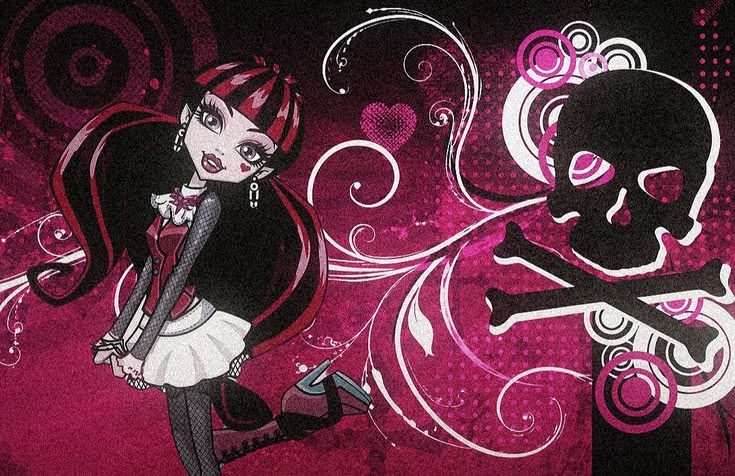

hobbiez r fun, 'n i have a lot of dem! rawrrrr.... they r so delicious
para para para para ladi dadi doo da! lololololol XDDDDDD or die... (dont) im js saying shiz... i wonder how long this is............................ ->>>>>>>>>> it's infinite! low long will u wait here 4 it 2 finish? idk (wait i answered my own questione) u are an idiot ha, ha ha ha haaaaa u are an idiot ha ha ha haahahahahahahahhahahahaaaaaa u are an idiot ahahahahahhahaha
i know this pretty rave girl always think about her when she says hi 2 me butterflies go right thru me when i see her dancin' wanna take a chance in getting a little closer 'n mb get 2 know her i know this pretty rave girl (rave girl rave girl rave girl...)
